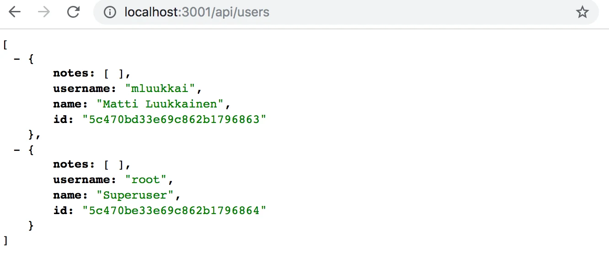
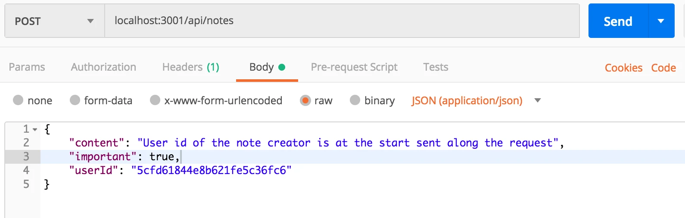
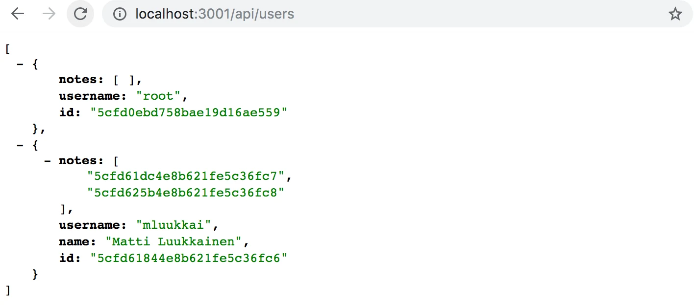
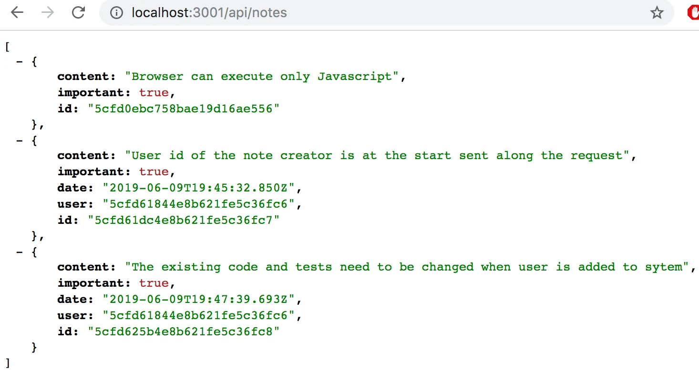
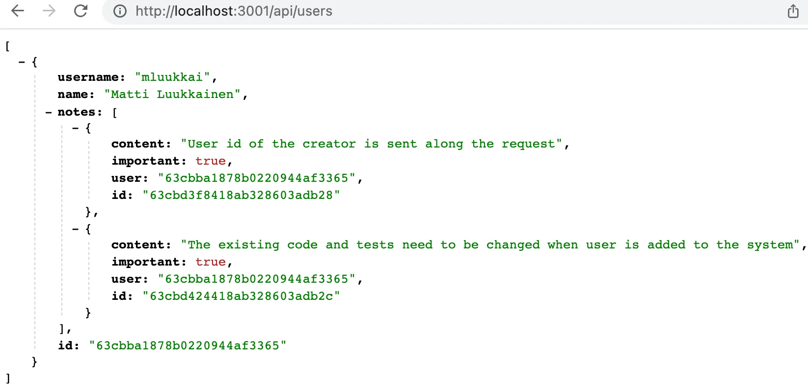
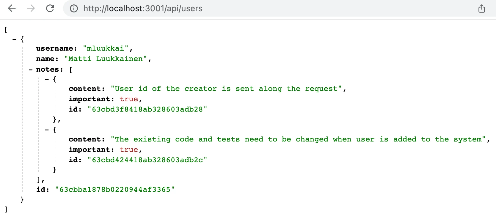
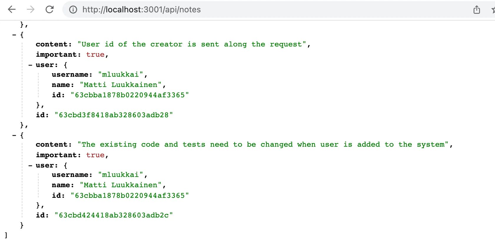

الجزء 4: اختبار الخوادم وإدارة المستخدمين
إدارة المستخدمين
نريد إضافة مصادقة المستخدمين وتفويضهم إلى تطبيقنا. ينبغي تخزين المستخدمين في قاعدة البيانات وربط كل ملاحظة بالمستخدم الذي أنشأها. وينبغي ألا يُسمح بحذف الملاحظة أو تعديلها إلا للمستخدم الذي أنشأها.
لنبدأ بإضافة معلومات المستخدمين إلى قاعدة البيانات. توجد علاقة واحد إلى متعدد بين المستخدم (User) والملاحظات (Note):

لو كنا نعمل بقاعدة بيانات علائقية لكان التنفيذ مباشراً. فسيكون لكل مورد جدوله المستقل في قاعدة البيانات، وسيُخزَّن معرّف المستخدم الذي أنشأ الملاحظة في جدول الملاحظات كمفتاح خارجي.
أما عند العمل بقواعد البيانات المستندية فالوضع مختلف قليلاً، إذ توجد طرق عديدة ومتنوعة لنمذجة الحالة.
يحفظ الحل الحالي كل ملاحظة في مجموعة الملاحظات في قاعدة البيانات. وإذا لم نرغب في تغيير هذه المجموعة القائمة، فالخيار الطبيعي هو حفظ المستخدمين في مجموعتهم الخاصة، users مثلاً.
وكما هو الحال مع جميع قواعد البيانات المستندية، يمكننا استخدام معرّفات الكائنات في Mongo للإشارة إلى مستندات في مجموعات أخرى. وهذا يشبه استخدام المفاتيح الخارجية في قواعد البيانات العلائقية.
تقليدياً، لا تدعم قواعد البيانات المستندية مثل Mongo استعلامات الربط المتاحة في قواعد البيانات العلائقية، والمستخدمة لتجميع البيانات من جداول متعددة. غير أنه بدءاً من الإصدار 3.2. أصبح Mongo يدعم استعلامات التجميع lookup. ولن نستعرض هذه الوظيفة في هذه الدورة.
إذا احتجنا وظيفة مشابهة لاستعلامات الربط، فسننفذها في شيفرة تطبيقنا عبر إجراء عدة استعلامات. وفي حالات معينة، يمكن لـ Mongoose أن يتولى ربط البيانات وتجميعها، ما يعطي مظهر استعلام ربط. لكن حتى في هذه الحالات، يُجري Mongoose عدة استعلامات إلى قاعدة البيانات في الخلفية.
المراجع عبر المجموعات
لو كنا نستخدم قاعدة بيانات علائقية لاحتوت الملاحظة على مفتاح مرجعي إلى المستخدم الذي أنشأها. وفي قواعد البيانات المستندية يمكننا فعل الشيء نفسه.
لنفترض أن مجموعة users تحتوي على مستخدمين اثنين:
[
{
username: 'mluukkai',
_id: 123456,
},
{
username: 'hellas',
_id: 141414,
},
]
تحتوي مجموعة notes على ثلاث ملاحظات، جميعها تحوي حقلاً user يشير إلى مستخدم في مجموعة users:
[
{
content: 'HTML is easy',
important: false,
_id: 221212,
user: 123456,
},
{
content: 'The most important operations of HTTP protocol are GET and POST',
important: true,
_id: 221255,
user: 123456,
},
{
content: 'A proper dinosaur codes with Java',
important: false,
_id: 221244,
user: 141414,
},
]
لا تشترط قواعد البيانات المستندية تخزين المفتاح الخارجي في موارد الملاحظات، بل يمكن أيضاً تخزينه في مجموعة المستخدمين، أو في كلتيهما معاً:
[
{
username: 'mluukkai',
_id: 123456,
notes: [221212, 221255],
},
{
username: 'hellas',
_id: 141414,
notes: [221244],
},
]
ولأن المستخدم يمكن أن يملك ملاحظات كثيرة، تُخزَّن المعرّفات المرتبطة في مصفوفة داخل حقل notes.
تقدم قواعد البيانات المستندية أيضاً طريقة مختلفة جذرياً لتنظيم البيانات: فقد يكون من المفيد في بعض الحالات تضمين مصفوفة الملاحظات كاملة كجزء من المستندات في مجموعة المستخدمين:
[
{
username: 'mluukkai',
_id: 123456,
notes: [
{
content: 'HTML is easy',
important: false,
},
{
content: 'The most important operations of HTTP protocol are GET and POST',
important: true,
},
],
},
{
username: 'hellas',
_id: 141414,
notes: [
{
content:
'A proper dinosaur codes with Java',
important: false,
},
],
},
]
في هذا المخطط، ستكون الملاحظات متداخلة بإحكام تحت المستخدمين ولن تولّد قاعدة البيانات معرّفات لها.
لم يعد هيكل قاعدة البيانات ومخططها بديهياً كما كان الحال مع قواعد البيانات العلائقية. ويجب أن يدعم المخطط المختار حالات استخدام التطبيق بأفضل شكل ممكن. وهذا ليس قرار تصميم بسيطاً، إذ لا تكون جميع حالات استخدام التطبيق معروفة عند اتخاذ قرار التصميم.
ومن المفارقات أن قواعد البيانات بلا مخططات مثل Mongo تتطلب من المطورين اتخاذ قرارات تصميم أكثر جذرية بكثير بشأن تنظيم البيانات في بداية المشروع مقارنة بقواعد البيانات العلائقية ذات المخططات. وفي المتوسط، توفر قواعد البيانات العلائقية طريقة مناسبة إلى حد ما لتنظيم البيانات في كثير من التطبيقات.
مخطط Mongoose للمستخدمين
في هذه الحالة، نقرر تخزين معرّفات الملاحظات التي أنشأها المستخدم في مستند المستخدم. لنعرّف النموذج الذي يمثل المستخدم في الملف models/user.js:
const mongoose = require('mongoose')
const userSchema = new mongoose.Schema({
username: String,
name: String,
passwordHash: String,
notes: [
{
type: mongoose.Schema.Types.ObjectId,
ref: 'Note'
}
],
})
userSchema.set('toJSON', {
transform: (document, returnedObject) => {
returnedObject.id = returnedObject._id.toString()
delete returnedObject._id
delete returnedObject.__v
// لا ينبغي كشف passwordHash
delete returnedObject.passwordHash
}
})
const User = mongoose.model('User', userSchema)
module.exports = User
تُخزَّن معرّفات الملاحظات داخل مستند المستخدم كمصفوفة من معرّفات Mongo. والتعريف كالتالي:
{
type: mongoose.Schema.Types.ObjectId,
ref: 'Note'
}
نوع الحقل هو ObjectId، أي أنه يشير إلى مستند آخر. ويحدد حقل ref اسم النموذج المشار إليه. ولا يعرف Mongo بطبيعته أن هذا حقل يشير إلى ملاحظات؛ فالصياغة مرتبطة بـ Mongoose ومحددة به وحده.
لنوسّع مخطط الملاحظة المعرّف في الملف models/note.js بحيث تحتوي الملاحظة على معلومات عن المستخدم الذي أنشأها:
const noteSchema = new mongoose.Schema({
content: {
type: String,
required: true,
minlength: 5
},
important: Boolean,
// highlight-start
user: {
type: mongoose.Schema.Types.ObjectId,
ref: 'User'
}
// highlight-end
})
وعلى النقيض تماماً من أعراف قواعد البيانات العلائقية، تُخزَّن المراجع الآن في كلا المستندين: فالملاحظة تشير إلى المستخدم الذي أنشأها، ولدى المستخدم مصفوفة مراجع إلى جميع الملاحظات التي أنشأها.
إنشاء المستخدمين
لننفذ مساراً لإنشاء مستخدمين جدد. لدى المستخدم username فريد، وname، وشيء يُسمى passwordHash. وتجزئة كلمة المرور هي ناتج دالة تجزئة أحادية الاتجاه تُطبَّق على كلمة مرور المستخدم. وليس من الحكمة أبداً تخزين كلمات المرور نصاً صريحاً غير مشفَّرة في قاعدة البيانات!
لنثبّت حزمة bcrypt لتوليد تجزئات كلمات المرور:
npm install bcrypt
يتم إنشاء المستخدمين الجدد وفقاً لأعراف REST التي ناقشناها في الجزء 3، عبر إجراء طلب HTTP POST إلى مسار users.
لنعرّف موجّهاً منفصلاً للتعامل مع المستخدمين في ملف جديد controllers/users.js. ولنأخذ الموجّه إلى الاستخدام في تطبيقنا في الملف app.js، بحيث يتعامل مع الطلبات الموجهة إلى عنوان /api/users:
// ...
const notesRouter = require('./controllers/notes')
const usersRouter = require('./controllers/users') // highlight-line
// ...
app.use('/api/notes', notesRouter)
app.use('/api/users', usersRouter) // highlight-line
// ...
محتويات الملف controllers/users.js الذي يعرّف الموجّه كالتالي:
const bcrypt = require('bcrypt')
const usersRouter = require('express').Router()
const User = require('../models/user')
usersRouter.post('/', async (request, response) => {
const { username, name, password } = request.body
const saltRounds = 10
const passwordHash = await bcrypt.hash(password, saltRounds)
const user = new User({
username,
name,
passwordHash,
})
const savedUser = await user.save()
response.status(201).json(savedUser)
})
module.exports = usersRouter
كلمة المرور المرسلة في الطلب لا تُخزَّن في قاعدة البيانات. بل نخزّن تجزئة كلمة المرور المولَّدة بالدالة bcrypt.hash.
أساسيات تخزين كلمات المرور خارج نطاق هذه المادة. ولن نناقش معنى الرقم السحري 10 المُسنَد إلى متغير saltRounds، لكن يمكنك قراءة المزيد عنه في المادة المرتبطة.
لا تحتوي شيفرتنا الحالية على أي معالجة أخطاء أو تحقق من المدخلات للتأكد من أن اسم المستخدم وكلمة المرور بالصيغة المطلوبة.
يمكن، بل ينبغي، اختبار الميزة الجديدة يدوياً في البداية بأداة مثل Postman. غير أن الاختبار اليدوي سيصبح سريعاً مرهقاً للغاية، خصوصاً بعد تنفيذ وظيفة تفرض أن تكون أسماء المستخدمين فريدة.
كتابة اختبارات آلية تتطلب جهداً أقل بكثير، وستجعل تطوير تطبيقنا أسهل بكثير.
يمكن أن تبدو اختباراتنا الأولية هكذا:
const bcrypt = require('bcrypt')
const User = require('../models/user')
//...
describe('when there is initially one user in db', () => {
beforeEach(async () => {
await User.deleteMany({})
const passwordHash = await bcrypt.hash('sekret', 10)
const user = new User({ username: 'root', passwordHash })
await user.save()
})
test('creation succeeds with a fresh username', async () => {
const usersAtStart = await helper.usersInDb()
const newUser = {
username: 'mluukkai',
name: 'Matti Luukkainen',
password: 'salainen',
}
await api
.post('/api/users')
.send(newUser)
.expect(201)
.expect('Content-Type', /application\/json/)
const usersAtEnd = await helper.usersInDb()
assert.strictEqual(usersAtEnd.length, usersAtStart.length + 1)
const usernames = usersAtEnd.map(u => u.username)
assert(usernames.includes(newUser.username))
})
})
تستخدم الاختبارات دالة المساعدة usersInDb() التي نفذناها في الملف tests/test_helper.js. وتُستخدم الدالة لمساعدتنا في التحقق من حالة قاعدة البيانات بعد إنشاء مستخدم:
const User = require('../models/user')
// ...
const usersInDb = async () => {
const users = await User.find({})
return users.map(u => u.toJSON())
}
module.exports = {
initialNotes,
nonExistingId,
notesInDb,
usersInDb,
}
تضيف كتلة beforeEach مستخدماً باسم المستخدم root إلى قاعدة البيانات. ويمكننا كتابة اختبار جديد يتحقق من أنه لا يمكن إنشاء مستخدم جديد بنفس اسم المستخدم:
describe('when there is initially one user in db', () => {
// ...
test('creation fails with proper statuscode and message if username already taken', async () => {
const usersAtStart = await helper.usersInDb()
const newUser = {
username: 'root',
name: 'Superuser',
password: 'salainen',
}
const result = await api
.post('/api/users')
.send(newUser)
.expect(400)
.expect('Content-Type', /application\/json/)
const usersAtEnd = await helper.usersInDb()
assert(result.body.error.includes('expected `username` to be unique'))
assert.strictEqual(usersAtEnd.length, usersAtStart.length)
})
})
من الواضح أن حالة الاختبار لن تنجح في هذه المرحلة. نحن في جوهر الأمر نمارس التطوير المدفوع بالاختبارات (TDD)، حيث تُكتب اختبارات الوظيفة الجديدة قبل تنفيذ الوظيفة.
لا توفر تحققات Mongoose طريقة مباشرة للتحقق من فرادة قيمة حقل ما. غير أنه يمكن تحقيق الفرادة عبر تعريف فهرس فرادة لحقل ما. ويتم التعريف كالتالي:
const mongoose = require('mongoose')
const userSchema = mongoose.Schema({
// highlight-start
username: {
type: String,
required: true,
unique: true // هذا يضمن فرادة اسم المستخدم
},
// highlight-end
name: String,
passwordHash: String,
notes: [
{
type: mongoose.Schema.Types.ObjectId,
ref: 'Note'
}
],
})
// ...
غير أننا نريد توخي الحذر عند استخدام فهرس الفرادة. فإذا كانت هناك مستندات في قاعدة البيانات تخالف شرط الفرادة بالفعل، فلن يُنشأ أي فهرس. لذا عند إضافة فهرس فرادة، تأكد من أن قاعدة البيانات في حالة سليمة! لقد أضاف الاختبار أعلاه المستخدم ذا اسم المستخدم root إلى قاعدة البيانات مرتين، ويجب إزالتهما ليتشكّل الفهرس وتعمل الشيفرة.
لا تكتشف تحققات Mongoose انتهاك الفهرس، وبدلاً من ValidationError تُعيد خطأً من النوع MongoServerError. ولذلك نحتاج إلى توسيع معالج الأخطاء لتلك الحالة:
const errorHandler = (error, request, response, next) => {
if (error.name === 'CastError') {
return response.status(400).send({ error: 'malformatted id' })
} else if (error.name === 'ValidationError') {
return response.status(400).json({ error: error.message })
// highlight-start
} else if (error.name === 'MongoServerError' && error.message.includes('E11000 duplicate key error')) {
return response.status(400).json({ error: 'expected `username` to be unique' })
}
// highlight-end
next(error)
}
بعد هذه التغييرات، ستنجح الاختبارات.
يمكننا أيضاً تنفيذ تحققات أخرى عند إنشاء المستخدم. يمكننا التحقق من أن اسم المستخدم طويل بما يكفي، أو أن اسم المستخدم يتكون من محارف مسموح بها فقط، أو أن كلمة المرور قوية بما يكفي. وتنفيذ هذه الوظائف متروك كتمرين اختياري.
وقبل أن نمضي قدماً، لنضف تنفيذاً أولياً لمعالج مسار يعيد جميع المستخدمين في قاعدة البيانات:
usersRouter.get('/', async (request, response) => {
const users = await User.find({})
response.json(users)
})
لإنشاء مستخدمين جدد في بيئة إنتاج أو تطوير، يمكنك إرسال طلب POST إلى /api/users/ عبر Postman أو REST Client بالصيغة التالية:
{
"username": "root",
"name": "Superuser",
"password": "salainen"
}
تبدو القائمة هكذا:

يمكنك العثور على شيفرة تطبيقنا الحالي بالكامل في فرع part4-7 من مستودع GitHub هذا.
إنشاء ملاحظة جديدة
يجب تحديث شيفرة إنشاء ملاحظة جديدة بحيث تُسنَد الملاحظة إلى المستخدم الذي أنشأها.
لنوسّع تنفيذنا الحالي في controllers/notes.js بحيث تُرسَل معلومات المستخدم الذي أنشأ الملاحظة في حقل userId من جسم الطلب:
const notesRouter = require('express').Router()
const Note = require('../models/note')
const User = require('../models/user') //highlight-line
//...
notesRouter.post('/', async (request, response) => {
const body = request.body
const user = await User.findById(body.userId)// highlight-line
// highlight-start
if (!user) {
return response.status(400).json({ error: 'userId missing or not valid' })
}
// highlight-end
const note = new Note({
content: body.content,
important: body.important || false,
user: user._id //highlight-line
})
const savedNote = await note.save()
user.notes = user.notes.concat(savedNote._id) //highlight-line
await user.save() //highlight-line
response.status(201).json(savedNote)
})
// ...
يُستعلَم أولاً من قاعدة البيانات عن مستخدم باستخدام userId المقدم في الطلب. وإذا لم يُعثر على المستخدم، تُرسَل الاستجابة برمز حالة 400 (Bad Request) ورسالة خطأ: "userId missing or not valid".
ويجدر بالذكر أن كائن user يتغير أيضاً. فـid الملاحظة يُخزَّن في حقل notes من كائن user:
const user = await User.findById(body.userId)
// ...
user.notes = user.notes.concat(savedNote._id)
await user.save()
لنجرب إنشاء ملاحظة جديدة

يبدو أن العملية تعمل. لنضف ملاحظة أخرى ثم نزُر المسار الخاص بجلب جميع المستخدمين:

نرى أن المستخدم لديه ملاحظتان.
وبالمثل، يمكن رؤية معرّفات المستخدمين الذين أنشأوا الملاحظات عند زيارة المسار الخاص بجلب جميع الملاحظات:

بسبب التغييرات التي أجريناها، لم تعد الاختبارات تنجح، لكننا نترك إصلاح الاختبارات كتمرين اختياري. كما لم تُراعَ التغييرات التي أجريناها في الواجهة الأمامية، لذا لم تعد وظيفة إنشاء الملاحظات تعمل. وسنصلح الواجهة الأمامية في الجزء 5 من الدورة.
populate
نريد أن يعمل API لدينا بطريقة تجعل كائنات المستخدمين، عند إجراء طلب HTTP GET إلى مسار /api/users، تحتوي أيضاً على محتويات ملاحظات المستخدم لا على معرّفها فقط. وفي قاعدة بيانات علائقية، ستُنفَّذ هذه الوظيفة بـاستعلام ربط.
وكما ذُكر سابقاً، لا تدعم قواعد البيانات المستندية استعلامات الربط بين المجموعات دعماً صحيحاً، لكن مكتبة Mongoose يمكنها إجراء بعض هذه الروابط نيابة عنا. ويُنجز Mongoose الربط عبر إجراء استعلامات متعددة، وهذا مختلف عن استعلامات الربط في قواعد البيانات العلائقية التي تكون معاملاتية، بمعنى أن حالة قاعدة البيانات لا تتغير خلال الفترة التي يُجرى فيها الاستعلام. أما مع استعلامات الربط في Mongoose فلا شيء يضمن أن الحالة بين المجموعات المربوطة متسقة، بمعنى أننا إذا أجرينا استعلاماً يربط مجموعتي المستخدمين والملاحظات، فقد تتغير حالة المجموعات أثناء الاستعلام.
يتم الربط في Mongoose بدالة populate. لنحدّث أولاً المسار الذي يعيد جميع المستخدمين في الملف controllers/users.js:
usersRouter.get('/', async (request, response) => {
const users = await User // highlight-line
.find({}).populate('notes') // highlight-line
response.json(users)
})
تُسلسَل دالة populate بعد دالة find التي تُجري الاستعلام الأولي. وتحدد الوسيطة المعطاة لدالة populate أن المعرّفات التي تشير إلى كائنات note في حقل notes من مستند user ستُستبدَل بمستندات note المشار إليها. يستعلم Mongoose أولاً من مجموعة users عن قائمة المستخدمين، ثم يستعلم من المجموعة المقابلة لكائن النموذج المحدد بخاصية ref في مخطط المستخدمين عن بيانات ذات معرّف الكائن المعطى.
النتيجة هي تقريباً بالضبط ما أردناه:

يمكننا استخدام دالة populate لاختيار الحقول التي نريد تضمينها من المستندات. فبالإضافة إلى الحقل id، لم تعد تهمنا الآن سوى content وimportant.
ويتم اختيار الحقول باستخدام صياغة Mongo:
usersRouter.get('/', async (request, response) => {
const users = await User
.find({}).populate('notes', { content: 1, important: 1 })
response.json(users)
})
النتيجة الآن هي بالضبط ما نريد:

لنضف أيضاً تعبئة مناسبة لمعلومات المستخدم في الملاحظات في الملف controllers/notes.js:
notesRouter.get('/', async (request, response) => {
const notes = await Note
.find({}).populate('user', { username: 1, name: 1 })
response.json(notes)
})
الآن تُضاف معلومات المستخدم إلى حقل user في كائنات الملاحظات.

من المهم أن نفهم أن قاعدة البيانات لا تعرف أن المعرّفات المخزنة في حقل user من مجموعة الملاحظات تشير إلى مستندات في مجموعة المستخدمين.
تستند وظيفة دالة populate في Mongoose إلى أننا عرّفنا «أنواعاً» للمراجع في مخطط Mongoose بخيار ref:
const noteSchema = new mongoose.Schema({
content: {
type: String,
required: true,
minlength: 5
},
important: Boolean,
user: {
type: mongoose.Schema.Types.ObjectId,
ref: 'User'
}
})
يمكنك العثور على شيفرة تطبيقنا الحالي بالكامل في فرع part4-8 من مستودع GitHub هذا.